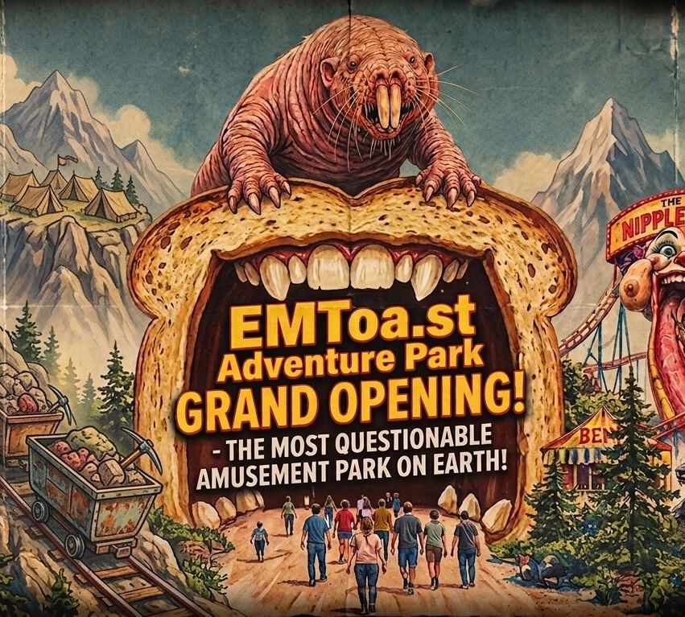

EMToa.st Adventure Park GRAND OPENING!



FOR IMMEDIATE RELEASE
EMToa.st Adventure Park Announces Grand Opening of “The Most Questionable Amusement Park on Earth”
SOMERSET, MT — September 26, 2026 — EMToa.st Adventure Park invites the public to experience rides, monsters, questionable food, and several attractions that probably should have required additional permits.
SOMERSET, MT — EMToa.st Adventure Park, the newest and least thoroughly investigated addition to the American amusement-park industry, today announced its grand opening to the public.
Located in scenic Somerset, Montana, EMToa.st Adventure Park promises visitors an unprecedented combination of roller coasters, mutant creatures, questionable engineering, interactive exhibits, and attractions inspired by some of the strangest stories ever reported by EMToa.st.
“We wanted to create an amusement park where families could come together and experience things they normally wouldn't encounter outside of a police report,” said Randy Stott, CEO and spokesperson for EMToa.st Adventure Park. “We believe we've accomplished that.”
“Forget Action Park,” Stott added. “This is EMToa.st.”
RIDES, MONSTERS & MAYHEM
Among the park's featured attractions are:
THE DIARRHEA LOG FLUME: Ride the wave! Guests are invited to climb aboard and experience a thrilling journey through what park officials describe as “a completely sanitary representation of gastrointestinal catastrophe.”
THE ASSHOLDER TOWER: A towering vertical attraction designed to test the limits of human courage, structural engineering, and the definition of the word “assholder.”
TUNGUSKA CREATURE ENCOUNTER: Come face-to-face with the mysterious Tunguska Creature in an immersive experience based on reports of the strange animal first discovered in the Tunguska wasteland. Guests are advised not to feed the creature, stare directly into its eyes, or ask how it got so many teeth.
THE ASS-DRAGGING WEREWOLF COASTER: Hold on tight as a hairy, howling werewolf drags its enormous backside across the landscape at terrifying speed. Guests plunge through forests, caves, and several completely unnecessary tunnels while the creature repeatedly attempts to scratch an itch it apparently cannot reach. “It's one of the most technically challenging coasters we've ever built,” Stott said. “Mostly because we had to figure out how to make the ass drag realistically.” Park officials recommend that riders keep their hands, feet, personal belongings, and dignity inside the vehicle at all times.
THE NIPPLE SLIDE: A gigantic anatomical waterslide for visitors of all ages. “It's exactly what you think it is,” Stott said.
ROBOT UPRISING 3D SHOOTING RIDE: Humanity's last line of defense has been converted into a theme-park attraction. Guests climb aboard heavily armored vehicles and enter a three-dimensional battlefield where an army of rogue robots has launched an all-out uprising. Using interactive laser blasters, riders attempt to defend civilization while destroying as many robots as possible. “It's basically a training exercise for the inevitable,” Stott said. The attraction concludes with a massive robot battle, an explosion, and a computerized voice asking guests whether they are sure they want to continue.
LASER-POWERED SANTA DARK RIDE: Christmas has gone horribly wrong. Guests board a series of vehicles and travel through Santa's secret underground workshop, where experimental laser technology has transformed the North Pole into a dangerous technological nightmare. Visitors will encounter laser-powered reindeer, malfunctioning elves, exploding presents, heavily armed toy soldiers, and Santa himself attempting to determine what went wrong. Stott described the attraction as “a heartwarming Christmas experience for the entire family, assuming your family enjoys lasers.”
NIKE AIR BS COASTER: Higher. Faster. Dumber. This high-speed roller coaster combines cutting-edge footwear technology with several questionable claims about the future of athletic performance.
MORE THAN RIDES
Visitors can also experience the Horrorscope Spin Zone and the Animatronic Santa: The Final Ride, among numerous other attractions currently under investigation by park management.
For those seeking something to eat, EMToa.st Adventure Park offers its famous Festive Fried Bugs, described by Stott as “a surprisingly affordable source of protein and a very effective way to ruin Christmas.”
The park's management emphasized that additional attractions will continue to appear throughout the season.
“We have literally hundreds of EMToast stories to work with,” Stott said. “At this rate, we may never run out of terrible ideas.”
PARK CEO DEFENDS QUESTIONABLE DECISIONS
As both CEO and spokesperson, Stott defended the park's unconventional approach to amusement-park management.
“People are tired of the same old roller coasters,” Stott said. “They want experiences. They want adventure. They want to look at a giant mutant creature and wonder whether the park has a permit for that.”
When asked whether the park had obtained all necessary permits, Stott paused.
“We have obtained several permits.”
When asked whether those permits covered everything currently operating at the park, he paused again.
“We have obtained several different permits.”
Stott said the park's management was particularly proud of the Tunguska Creature Encounter.
“We spent months making sure the creature looked exactly like the reports described it.”
A reporter asked whether the creature was actually inside the attraction.
Stott smiled.
“Next question.”
LOCAL TOURISM OFFICIALS WELCOME NEW ATTRACTION
Montana tourism officials expressed optimism that EMToa.st Adventure Park could become a major regional attraction.
“This is an exciting development for Somerset and the surrounding area,” said Karl Jurg Jr., a representative of the Montana Office of Tourism.
“Visitors are always looking for unique experiences, and EMToa.st Adventure Park certainly appears to offer something that is difficult to find anywhere else.”
Jurg acknowledged that some of the attractions may require additional explanation.
“We're still trying to determine what exactly the Assholder Tower is.”
“But we're confident people will come.”
Local businesses have already reported an increase in visitors.
“We've had people coming in asking where the Tunguska Creature is,” said one Somerset business owner.
“We tell them we don't know.”
“They usually order breakfast anyway.”
FIRE MARSHAL HAS CONCERNS
Local Fire Marshal Betty Wizard said her office has several outstanding questions regarding the park.
“We have concerns about the emergency exits, the pyrotechnics, the electrical systems, the underground tunnels, the giant flaming Santa, the laser system, and something called the ‘Nipple Slide,’” Wizard said.
“We have repeatedly asked management to provide us with a complete list of attractions.”
“They keep giving us a list.”
“Then another attraction appears.”
Wizard said inspectors recently discovered a previously undocumented structure behind the park's main midway.
“It wasn't on the original plans.”
“What is it?” a reporter asked.
“We don't know.”
“Is it safe?”
“We don't know.”
“Is it open to the public?”
Wizard sighed.
“It appears to be.”
Stott declined to comment on the structure.
MANAGEMENT INSISTS THE PARK IS SAFE
Stott rejected suggestions that EMToa.st Adventure Park may have opened prematurely.
“We have conducted extensive safety testing.”
“How extensive?” a reporter asked.
“Very.”
“Can you give us a number?”
“Three.”
“Three what?”
Stott looked toward a nearby employee.
“Three.”
The employee quietly replied, “Three minutes.”
Stott nodded.
“Three minutes of testing.”
ADMISSION INFORMATION
General admission is $24.95 for adults and $19.95 for children ages 3–12.
The park is scheduled to operate daily from 10 AM to 10 PM, “or later, if we feel like it.”
Visitors are encouraged to consult www.EMToa.st before attending for updates, new attractions, unexpected closures, and stories that may eventually become rides.
Media Contact:
Randy Stott
CEO & Spokesperson
EMToa.st Adventure Park
Website: www.EMToa.st
ABOUT EMToa.st ADVENTURE PARK
EMToa.st Adventure Park is a wholly questionable entertainment destination inspired by the bizarre news, strange creatures, questionable science, disturbing holidays, technological disasters, and general nonsense documented throughout the history of EMToa.st.